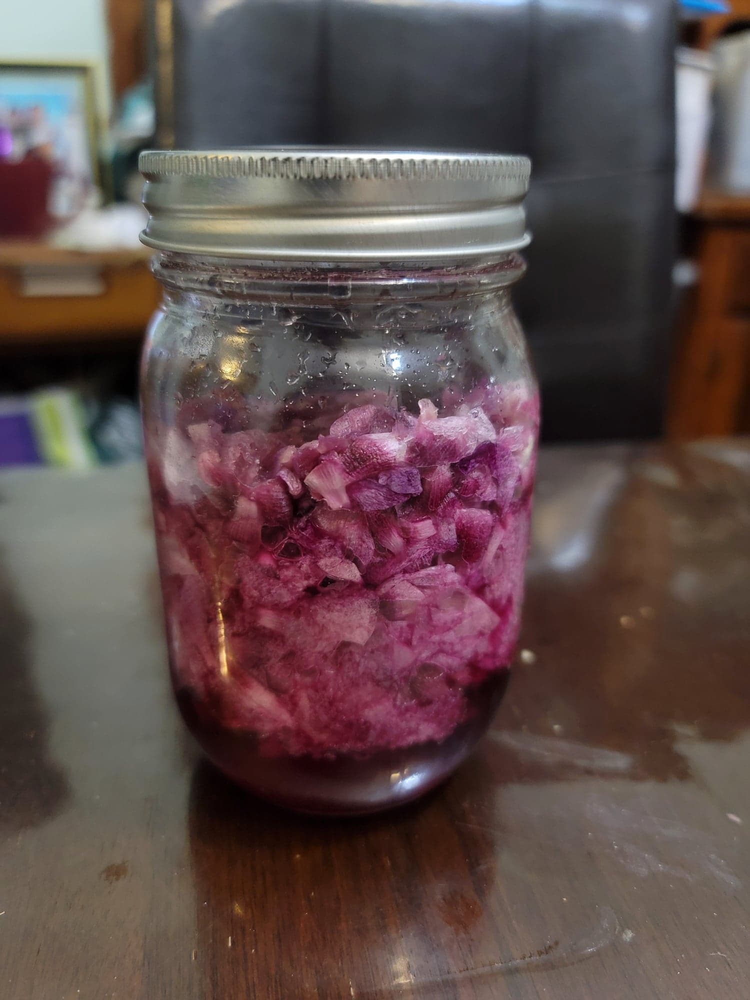

Rose of Sharon Cheong

Ingredients:
- 1 part in grams Rose of sharon petals
- 1 part in grams Sugar
Instructions:
- Ensure that the rose of sharons are well cleaned and then dry to the touch.
- Layer the sugar and petals into a sterilized glass jar. Cover loosely and let ferment in a room temperature and dark environment for about 1 week or to preference.